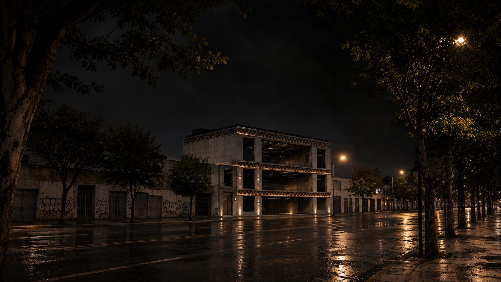
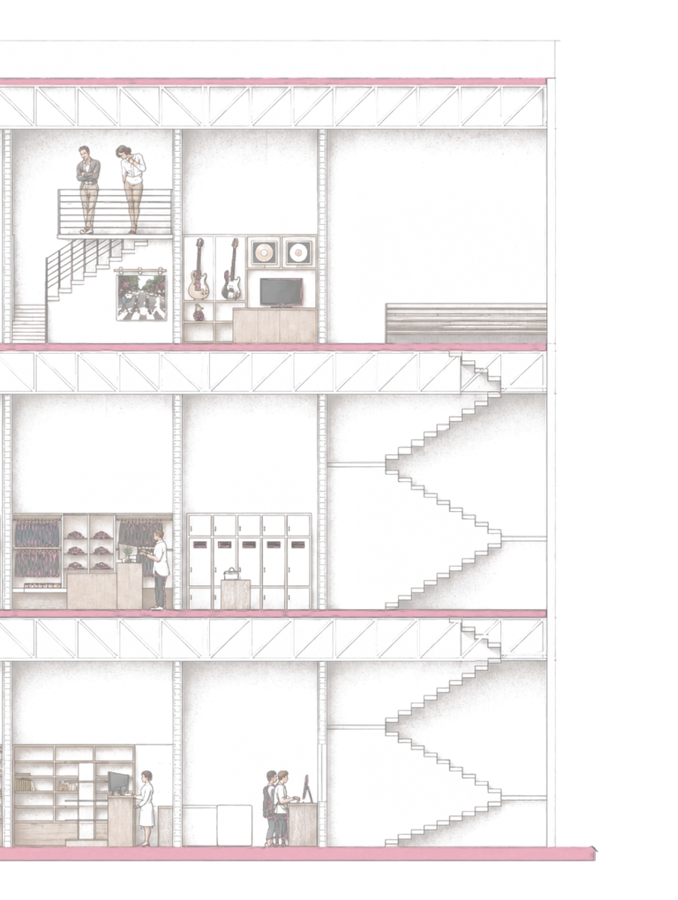

THE EYE
HUB.
Una estructura que permite múltiples formas de encuentro. Explora la investigación, las plantas y las secciones de este anteproyecto.

Las imágenes de los planos se integran sobre el fondo de la página. Para consultar cotas y especificaciones con precisión, utiliza los PDF finales mediante los botones de cada apartado.
PLANTAS
(en capas).
Cuatro niveles de un mismo sistema: las áreas de servicio permanecen, mientras los espacios centrales y laterales se transforman. Los dibujos conservan sus líneas y anotaciones, ahora sin el fondo de papel del PDF.


SECCIONES
(del espacio).
Dos lecturas del edificio en sección. Los niveles, las armaduras y las circulaciones revelan su estructura espacial y su flexibilidad. Consulta las cotas y detalles en el documento técnico final.

